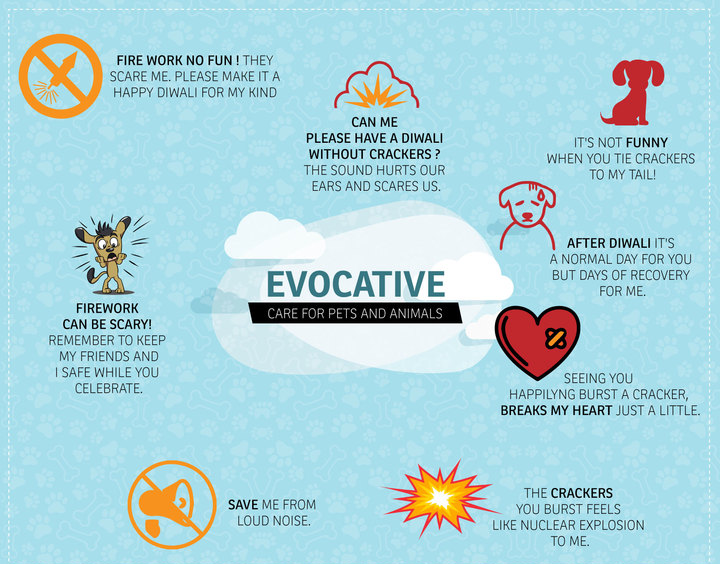
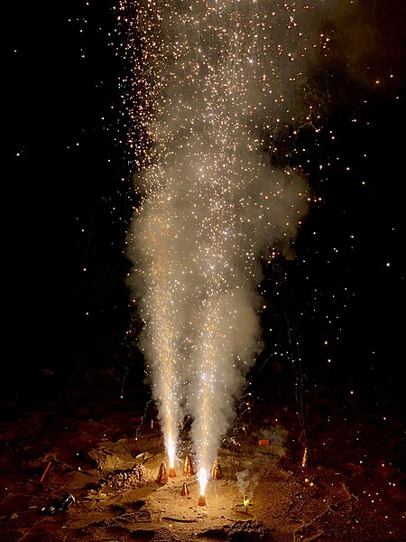

Every time we celebrate Diwali, we get eco-friendly Diwali wishes, slogans, and quotes via message and greetings. Diwali eco-friendly quotes are among the most prominent these days. As with a large amount of population, pollution is going
on the edge too, therefore people are now getting much more about the environment which is a good thing too.
KEEP IT IN YOUR MIND 😊
This Diwali burst your ego, not crackers.
Show that you care. Celebrate Green Diwali 2021
May the lights brighten your life and Rangoli add colourful moments to it this Diwali. Have a blessed one!
Be blessed with good luck and success and not with a polluted environment.
Crackers are of no use, they are just environment abuse.
How to celebrate Eco-friendly Diwali?
Reuse products for Diwali Decorations
Say no to Polythene for your Diwali Shopping
Go Firecrackers free
Give organic Exotic Sweet Baskets
Animals Perspective on Diwali Celebration

Firework no Fun! They scare us; please make it a Happy Diwali for our kind.
The Crackers you burst feels like a nuclear explosion to us.
It’s not funny when you tie crackers to my tail.

Types of Pollution on Diwali
Air pollution is certainly the biggest type of pollution on Diwali. Moreover, during the festival of Diwali, air pollution rises to dangerously high levels.
Most noteworthy, there is the emission of a great amount of smoke on Diwali.
This certainly makes the air very harmful to breathe. Also, this harmful effect of burning crackers remains for many days after Diwali. Furthermore, air pollution is also quite harmful to various animals and birds.
Land pollution is another significant type of pollution during Diwali. This certainly results from the leftover pieces of the burnt crackers. Furthermore, it can take many weeks to clean these. Most noteworthy, these pieces are non-biodegradable in nature. Hence, they cannot be disposed of so easily. Also, they turn toxic gradually with time.
Noise pollution is a major problem during Diwali. Firecrackers cause a tremendous amount of noise pollution. Most noteworthy, this noise pollution is pretty damaging to hearing. Also, noise pollution is a major problem for animals, old people, students, and sick people.